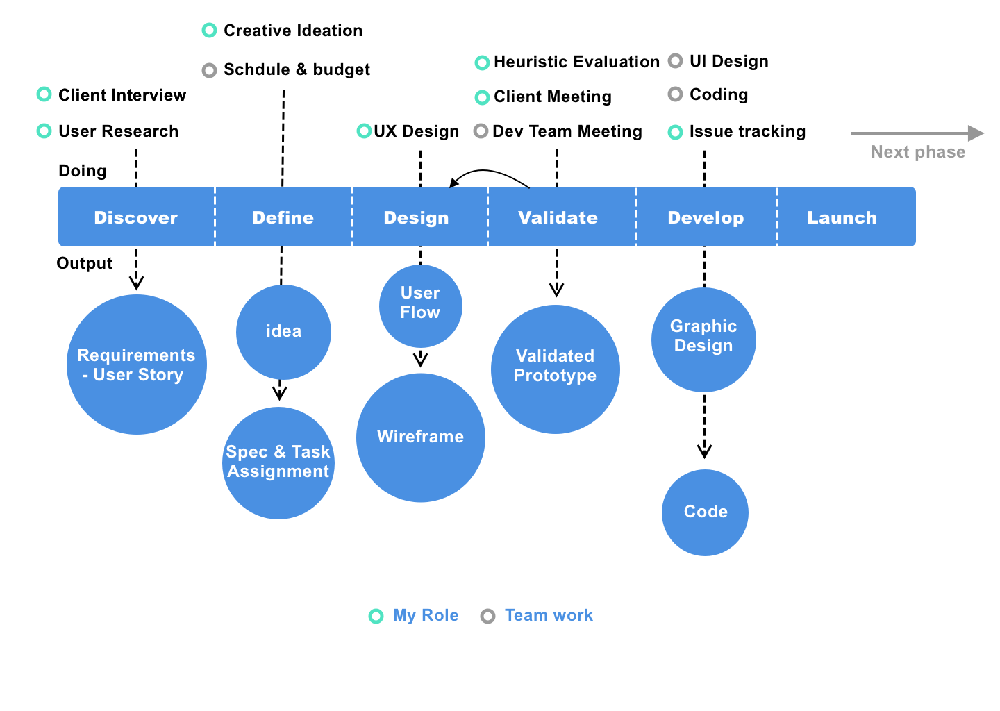
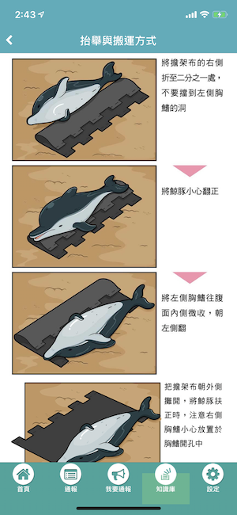

Cetacean Rescue is an app that help rescuers to find stranding whales or dolphins more quickly. Therefore, increase the survival rate of them. I tackled the whole UX research and design as well as in charge of the development management with the team.
Download App


-
My Role
-
Year
2015 - 2017
-
Employer
Larvata Tech (Taiwan)
-
Client
Taiwan Cetacean Society
Process
Started at 2015, this project is a three-years-long program. At the start of each year, the Taiwan Cetacean Society and I have a kick-off meeting, reflecting on the current status and setting up a new year's goal. Here's the process we went through in each phrases:
Discover
Client Interview
After the client kick-off meeting, I found that the Taiwan Cetacean Society has two primary goals. First, to increase the rescue successful rate of whales and dolphins. Second, educating the general public of how to help with rescue when they find a stranding whale or dolphin. The TCS already had a broad vision in mind, which they divided into three phases:
- 2015 Phase 1: a rescue report App for the public (Android Version)
- 2016 Phase 2: the iOS Version and New Features
- 2017 Phase 3: visualization of data
To explain my process of this project, I will focus on the first phrase, and emphasize the iteration to the following two phrases at the end of this article.
User Research
With the help of TCS, I started my research with a 1x1 interview with their professional rescuer. He provided not only the insight of how rescuers work but also how the public notify cases to them. Here's the key finding:
- Rescuers
- Rescuers is highly mobile all day, they rely on mobile phone and nearly don't use laptop or desktop PC when they are working
- They got new cases almost every two weeks, and the whole rescue action take days. They want a better way to update and report their prograss.
- The most critical information they need is the location and the status of the animal.
- General Public
- They don't know how to act when encounter a stranding animal, and their reports are usually ambiguous
- They usually call coast guard instead of the TCS
User Story
With the key findings, I was able to transform it into user stories in a spreadsheet. I like use spreedsheet because I can match the contextual inquiry result with ideas without miss anying detail. Moreover, I can further match it with the function and features in the next stage. Also, user stories can serves as a great tool to create empathy for users within developers and I can run the Scrum based on them. A sample of user story looks like the following:
As a rescuer, I need the location and photos of the stranding animal so that I can bring proper tools to the right plcae.
Define
Ideas
Based on these user story, I generate some main ideas:
- The report form should have the instruction of how to take proper photos so that the rescuers can know which tools they should bring with them.
- The app can automatically detect location but allow the user to enter notes (ex. near Hoa-Lian Harbor) or modify their location by redetecting the location.
- In case of an unstable internet, the app should have offline support. For example, saving the report to local storage before uplaoding to the cloud, and allow user to re-submit later.
- the user can receive update of their report by notification.
Then, I create the UI flow as follow:
Project Speculation & Task Assignment
Once I know how may pages and features I need. I arranged a tech meeting with the developer heads, we decided who would join the team and how much time we need. In addition, we were able to calculate the cost based on the estimated work hours.
Unfortunately, we had a shortage of App developer at that time. So, we outsourced this part to a freelancer. From this experience, I learned how to manage a remote developer. They need more attension and dicipline that in-house developers. We agree on setting up a stricter task report rules and meet requently after my normal work hour.
Design
I created the prototype with Axure RP. In this prototype, I have two design ideas I want to try: First, I want to display different status of a report in one page so that the developer can understanding the wireframe without effort. Second, I want to make this app looks more delightful and warm, in the opposite of suffering animal pictures that will show up in this app.
While I don't like to put too much design element into my wireframe because I don't want to interfere with UI designer's creativity too much, I paid attention to the words and instructions.
Validation
Heuristic Evaluation
When the prototype was ready, I ran a heuristic evaluation with several of my co-workers. One of the significant changes accroding to the heuristic evaluation is to move navigation tabs from the bottom to the top of the screen in the Android version. They said that based on the some research, Android users are prone to press the wrong tab because the bottom tabs are close to the original function tabs of Android phones.
the location of tabs is different between iOS version and Android version.
Usability Test & Client Approvement
After our in-house testing, I brought the prototype to the client and ran a usability test with them. At the same time, I would inform them that this would be the version that goes into development, so further changes would not be accepted until the next iteration.
Development
UI Design
I gave the UI designer my prototype, and she worked on the graphics display of this app. One of my special requirement is to create a cute loading animation.

UI design by the team
Waiting animation by the team
Coding
When we moved into the coding process, I created several "issues" on our issue tracking system Redmine, set up estimated work hours and assigned them to the developers. The most challenging part of this stage would be to track progress, help them solving difficult tasks by finding support, and tons of negotiation between departments and client. Moreover, I had a daily stand-up meeting with my team member and explain the detail of the features in case they had a misunderstanding with the design.
Phase 2 and Phase 3
Phase 2 - New Feature
In phase 2, we developed the iOS version of the app, and add a new feature - Wiki. This new feature allows the user to understand different species of whales and dolphins. Also, it explained in detail of how to rescue stranded animals by taking the standard process.

Phase 3 - Visualization of Data
After collecting data for two years, we can utilize the data by visualizing them to the public. In the past, the TSC had to create a picture of a map that lists the cases every month. It takes time and effort. By creating a website that shows the report data from the app database, we can show the most up-to-date cases with filter and interactive features.
In the News
Cetacean Rescue App is reported by these Taiwan Media:
Conclusion
This project is my first mobile app project that goes to public users. It had a more flexible schedule but a very limited budget, so I was able to run this project with multiple phrases. I learned how to design a mobile UX with a long-term prospect.
A critical challenge of this project is time management. I ran this project with other bigger projects, and I have to handle an outsource developer. It all turned out to a great experience.
Looking back on this project, I wish I would run task testing with more end-users. Back to 2015, I know nothing about task testing, which leaves many rooms for usability improvement